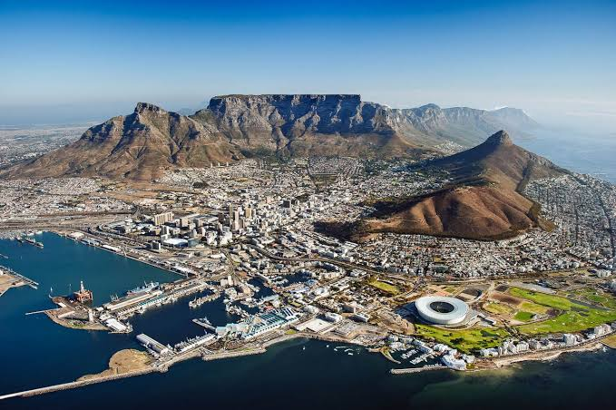
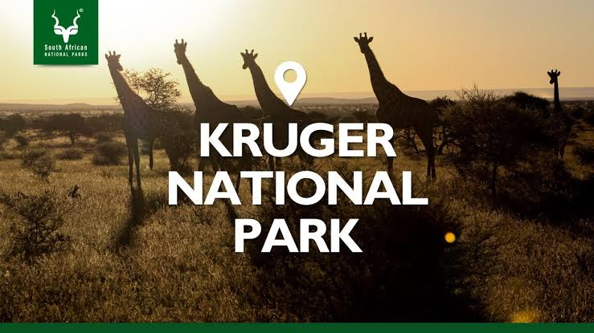

|
South Africa is a breathtaking travel destination, known for its stunning landscapes, diverse wildlife, and vibrant cultures. From majestic mountains to golden beaches, and bustling cities to serene winelands, the country offers unforgettable scenery and adventure for every traveler. This website highlights the top three tourist destinations in South Africa: Cape Town, Kruger National Park, and the Garden Route. Each location offers unique experiences, from the iconic Table Mountain in Cape Town to the incredible wildlife of Kruger National Park and the scenic beauty of the Garden Route. Whether you're an adventure seeker, a nature lover, or a culture enthusiast, South Africa has something special for you. Explore these destinations to discover the rich heritage and natural wonders that make South Africa a must-visit country. |
|  |  |  |
Cape Town |
Kruger National Park |
The Garden Route |
| Explore More | Travel Guides | About South Africa |